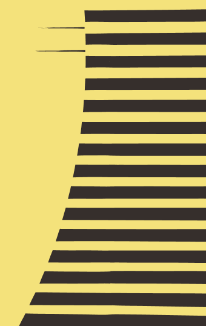
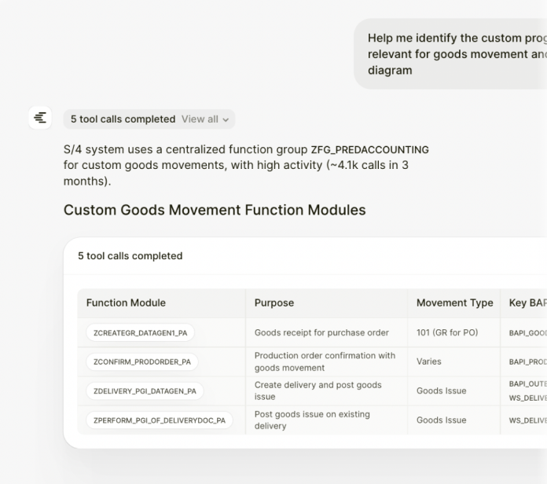
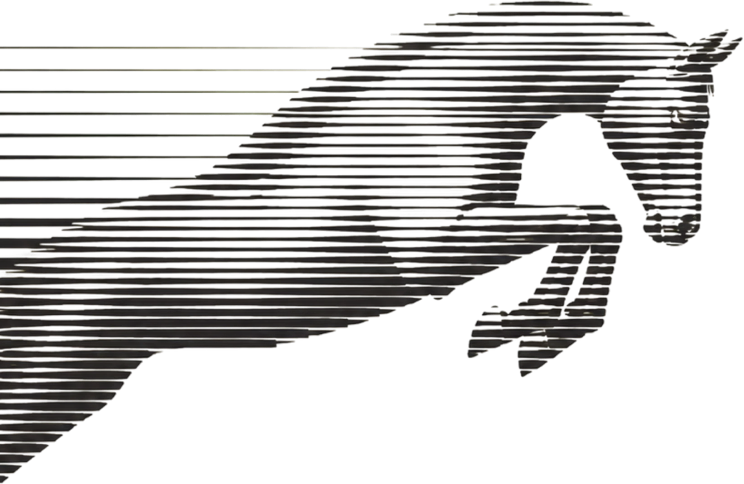

Legacy systems
Monoliths, mainframes, and undocumented repositories become readable maps.

Gallop reads your entire codebase, maps every business capability it holds,
and rebuilds it on modern foundations. With zero business logic loss.
Explain program ZP_012 at a high level: purpose, key dependencies, and potential issues.
Only 30% of modernization is writing code. The other 70% is knowing exactly what a system does, deciding what it should become, and proving the rebuild still behaves. Most tools automate the 30%. Gallop runs all of it — as one system, under your control.
70% understanding · 30% code
One platform runs the 100%.
Hold risky code at the gate.
Report, patch, approve.
Review packet
legacy-xml-parserHighRust parser ready
oracle-driver-compatMediumTyped adapter patch
commons-auth-bridgeHighCredential flow isolated
Approval path
Monoliths, mainframes, and undocumented repositories become readable maps.
Technical agents handle the heavy lifting of refactoring and porting logic.
The platform that verifies every move, ensuring zero business logic is left behind.
Gallop reads your source repositories, databases, and documents, then builds verified documentation and user journey maps. You get a complete, auditable picture of your business logic before any transformation begins.
Gallop drafts the destination architecture, the migration path, and an effort estimate. Your team reviews and locks each decision before build starts.
Agents handle refactoring, code generation, and test generation, story by story. Engineers stay focused on architecture decisions and final sign-off. Every user story ships to a sandbox for review before it moves forward.
Gallop confirms that every piece of business logic carries over exactly. Automated parity testing replaces manual regression work and removes the risk of human error at scale.
Gallop hosts and monitors your system for security advisories, runtime upgrades, and open issues. When it finds something, it writes the fix, runs tests, and opens a pull request. Your engineers review and merge.
Trusted by teams at Google Cloud, Telefonica, and Victoria's Secret.
A global clothing retailer migrated their core inventory monolith to Google Cloud with zero downtime.
A Fortune 500 retailer ported their promotion engine logic to a modern AI-ready API stack.
A major carrier eliminated $12M in maintenance costs by porting their COBOL billing logic to Java.
Modernization fails when business logic is lost in translation. Gallop automates parity checking. We run millions of inputs through both legacy and modern codebases to ensure behavior is identical down to the last decimal point.
Designed to move.

less effort than legacy modernization approaches
business logic verified, not assumed
not years, from assessment to go-live
No. Every capability is rebuilt and re-run against the original in a sandbox before anything reaches you. The new system is validated for business-logic parity — it behaves exactly like the old one, unless you decide otherwise.
Nothing cuts over on a single high-risk date; you move capability by capability, verified as you go.
Assessment of a live system runs in days, not months — a 7M-line core has been mapped in a week. Planning is as fast as your team can make decisions; rebuild and validation run continuously in the background.
The constraint isn’t the machine — it’s how quickly your people want to approve each step.
No. Gallop is built as two layers: agents do the work, your team holds the judgment. Engineering, product, data, and legal review and approve every decision on one platform.
Nothing autonomous reaches production without a human sign-off, and every action is logged.
Yes. Gallop runs in your environment; your code and data stay under your control, with a full audit trail on every change.
Certifications, deployment model & data-handling specifics listed as confirmed.

See Gallop read a real system, map it, and plan its modern future, live, on your own architecture.